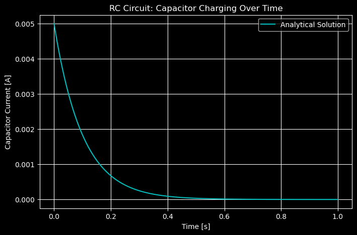
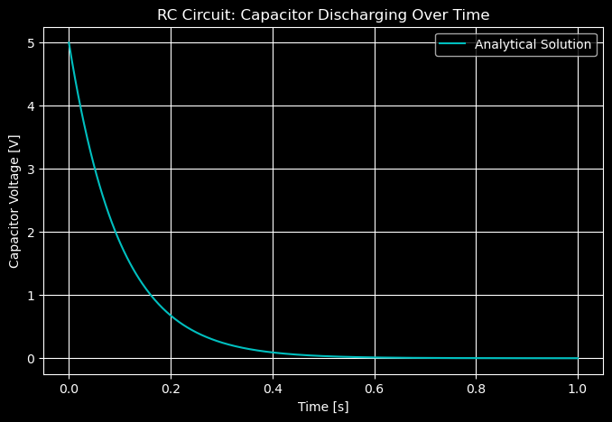

import numpy as np
import matplotlib.pyplot as plt
from scipy.integrate import solve_ivpTransient Analysis
Charging RC Circuit
# --- Parameters ---
R = 1e3 # resistance in ohms
C = 100e-6 # capacitance in farads
Vs = 5 # supply voltage in volts
# --- Differential equation: dVc/dt = (Vs - Vc) / (R*C) ---
def dVcdt(t, Vc):
return (Vs - Vc) / (R * C)
# --- Time range and initial condition ---
t_span = (0, 1) # simulate for 1 second
Vc0 = [0] # initial voltage (capacitor initially uncharged)
t_eval = np.linspace(*t_span, 500)
# --- Solve ODE ---
solution = solve_ivp(dVcdt, t_span, Vc0, t_eval=t_eval)
# --- Analytical solution for comparison ---
Vc_analytical = Vs * (1 - np.exp(-solution.t / (R * C)))
# --- Plot ---
plt.figure(figsize=(8,5))
plt.plot(solution.t, solution.y[0], 'yx', label='Numerical Solution')
plt.plot(solution.t, Vc_analytical, 'c', label='Analytical Solution')
plt.title('RC Circuit: Capacitor Charging Over Time')
plt.xlabel('Time [s]')
plt.ylabel('Capacitor Voltage [V]')
plt.grid(True)
plt.legend()
plt.show()
Charging RC Circuit (Current)
What does the current through \(C\) look like during this charging process?
\[ i_C(t) = C \frac{dV_C(t)}{dt} = \frac{V_0}{R} e^{-\frac{t}{RC}}\left(v_C(\infty)-v_C(0)\right) \]
Ic_analytical = (Vs / R) * np.exp(-solution.t / (R * C))
# --- Plot ---
plt.figure(figsize=(8,5))
# plt.plot(solution.t, solution.y[0], 'b', label='Numerical Solution')
plt.plot(solution.t, Ic_analytical, 'c', label='Analytical Solution')
plt.title('RC Circuit: Capacitor Charging Over Time')
plt.xlabel('Time [s]')
plt.ylabel('Capacitor Current [A]')
plt.grid(True)
plt.legend()
plt.show()
Note the discontinuity at time t=0. This is because the capacitor initially behaves like a short circuit, allowing maximum current to flow. As the capacitor charges, the voltage across it increases, reducing the current until it eventually reaches zero when the capacitor is fully charged.
Discharging RC Circuit
Draw a circuit that allows a capacitor to discharge through a resistor when a switch is moved to position 2 at time t=0.
Vc_analytical = Vs * np.exp(-solution.t / (R * C))
# --- Plot ---
plt.figure(figsize=(8,5))
plt.plot(solution.t, Vc_analytical, 'c', label='Analytical Solution')
plt.title('RC Circuit: Capacitor Discharging Over Time')
plt.xlabel('Time [s]')
plt.ylabel('Capacitor Voltage [V]')
plt.grid(True)
plt.legend()
plt.show()
What is \(V_c(t < 0)\)?
When the switch is moved to position 2 at time t=0, the capacitor begins to discharge through the resistor. Prior to that, it is at the steady-state voltage from being charge.
Secord-Order (RLC) Transient Response
\(\frac{1}{\omega^{2}_{n}} \frac{d^2v(t)}{dt^2} + \frac{2\zeta}{\omega_n} \frac{dv(t)}{dt} + v(t) = K_Sf(t)\)
Where: - \(\omega_n = \frac{1}{\sqrt{LC}}\) is the undamped natural frequency (rad/s) - \(\zeta = \frac{R}{2} \sqrt{\frac{C}{L}}\) is the damping ratio (unitless) - \(K_S = \frac{1}{L}\) is the system gain (1/Ohms)
# --- Parameters ---
omega_n = 1.0 # undamped natural frequency (rad/s)
zeta = 0.2 # damping ratio (underdamped)
K_S = 1.0 # system gain
# For this example, let's use a step input: f(t) = 1 for t >= 0
# The differential equation becomes:
# (1/omega_n^2) * d2v/dt2 + (2*zeta/omega_n) * dv/dt + v = K_S
# Convert to state-space form: let x1 = v, x2 = dv/dt
# dx1/dt = x2
# dx2/dt = omega_n^2 * (K_S - x1 - (2*zeta/omega_n)*x2)
def rlc_system(t, x):
v = x[0] # voltage
dvdt = x[1] # first derivative
# Second derivative from the differential equation
d2vdt2 = omega_n**2 * (K_S - v - (2*zeta/omega_n)*dvdt)
return [dvdt, d2vdt2]
# --- Initial conditions ---
v0 = 0 # initial voltage
dvdt0 = 0 # initial rate of change
# --- Time span ---
t_span = (0, 20) # simulate for 20 seconds (about 3-4 periods for this omega_n)
t_eval = np.linspace(*t_span, 1000)
# --- Solve the ODE ---
solution = solve_ivp(rlc_system, t_span, [v0, dvdt0], t_eval=t_eval, method='RK45')
# --- Calculate analytical solution for underdamped case ---
omega_d = omega_n * np.sqrt(1 - zeta**2) # damped natural frequency
A = K_S
B = (zeta * omega_n) / omega_d
v_analytical = A * (1 - np.exp(-zeta * omega_n * solution.t) *
(np.cos(omega_d * solution.t) + B * np.sin(omega_d * solution.t)))
# --- Plot ---
plt.figure(figsize=(10, 6))
plt.plot(solution.t, solution.y[0], 'b-', linewidth=2, label='Numerical Solution')
plt.plot(solution.t, v_analytical, 'r--', linewidth=1.5, label='Analytical Solution', alpha=0.7)
plt.axhline(y=K_S, color='g', linestyle=':', label=f'Steady State = {K_S}')
plt.title(rf'Second-Order RLC Transient Response\n($\omega_n$ = {omega_n}, $\zeta$ = {zeta}, $K_S$ = {K_S})')
plt.xlabel('Time [s]')
plt.ylabel('Voltage v(t)')
plt.grid(True, alpha=0.3)
plt.legend()
plt.xlim(0, 20)
plt.show()
# Print damped frequency and period
print(f"Damped natural frequency: ω_d = {omega_d:.3f} rad/s")
print(f"Damped period: T_d = {2*np.pi/omega_d:.3f} s")
print(f"Overshoot: {(np.max(solution.y[0]) - K_S)/K_S * 100:.1f}%")Damped natural frequency: ω_d = 0.980 rad/s
Damped period: T_d = 6.413 s
Overshoot: 52.6%How to interpret this response
- The natural frequency \(\omega_n\) indicates how quickly the system oscillates in the absence of damping.
- \(K_S\) indicates the steady-state gain of the system in response to a step input.
- The damping ratio \(\zeta\) determines the nature of the transient response:
- If \(\zeta < 1\), the system is underdamped and will exhibit oscillatory behavior before settling to the steady-state value.
- If \(\zeta = 1\), the system is critically damped and will return to steady-state as quickly as possible without oscillating.
- If \(\zeta > 1\), the system is overdamped and will return to steady-state slowly without oscillating.
- \(\zeta\) affects the speed of response and the amount of overshoot in the transient response, and it can be modulated by changing the resistance \(R\) in the circuit.
Physical Analogy: Car Suspension System
- \(\omega_n\) represents how quickly the car can respond to bumps in the road.
- A higher \(\omega_n\) means the car can react quickly.
- A lower \(\omega_n\) means a slower response.
- \(\zeta\) represents the damping effect of the shock absorbers.
- A higher \(\zeta\) means the car will settle down quickly after a bump.
- A lower \(\zeta\) means it will oscillate more before settling.
- \(K_S\) represents how much the car’s body moves in response to a bump.
- A higher \(K_S\) means more movement.
- A lower \(K_S\) means less movement.